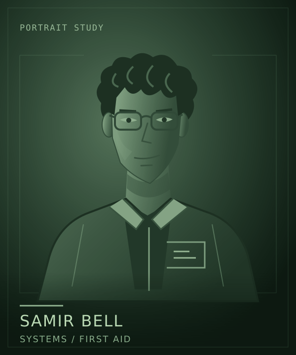

Lore / Samir Bell
Samir Bell
 | |
| Portrait concept. Appearance and clothing are not established designs. | |
| Role | Systems technician and first-aider |
|---|---|
| Employer | Clearwell Waterworks |
| Work | Communications, sensors, diagnostics |
{kind=link}
Samir Bell is the systems technician aboard Kaveri, Jonah Mercer's Clearwell workship. Communications, sensors, and diagnostics make Samir attentive to what reaches the crew, what the ship reports, and where the two disagree.
What the records support
Quiet curiosity matters more to Samir than a persuasive rumor. A discrepancy is a reason to look again, not proof that the most dramatic explanation is true.
That habit gives the crew a useful counterweight to confident accounts of events. Records can still be incomplete. Samir's first response is to establish what is known before deciding what it means.
Care aboard
Samir also serves as the crew's first-aider, not a dedicated ship's doctor. Medical responsibility is one part of a working role aboard a small civilian vessel. The five crew members are cross-trained; their different specialties do not make everyone else helpless outside an assigned task.
Alongside Leila Haddad's engineering work and Rina Okafor's operations, Samir helps the crew understand what it has to work with before the captain commits it to more.